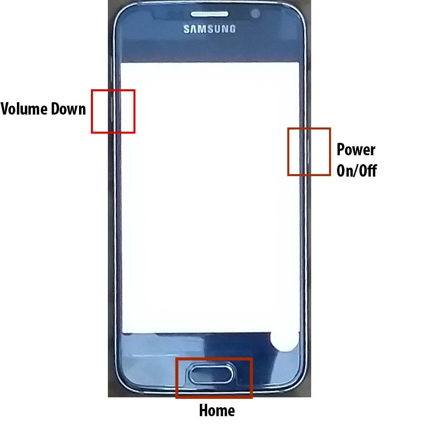
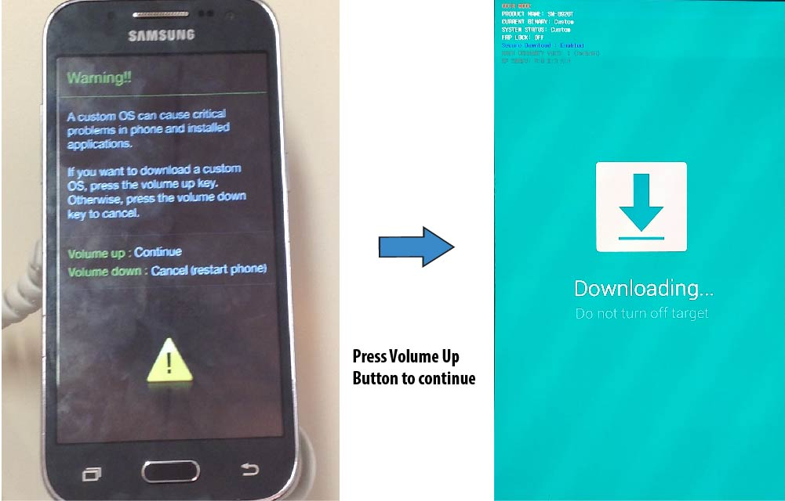
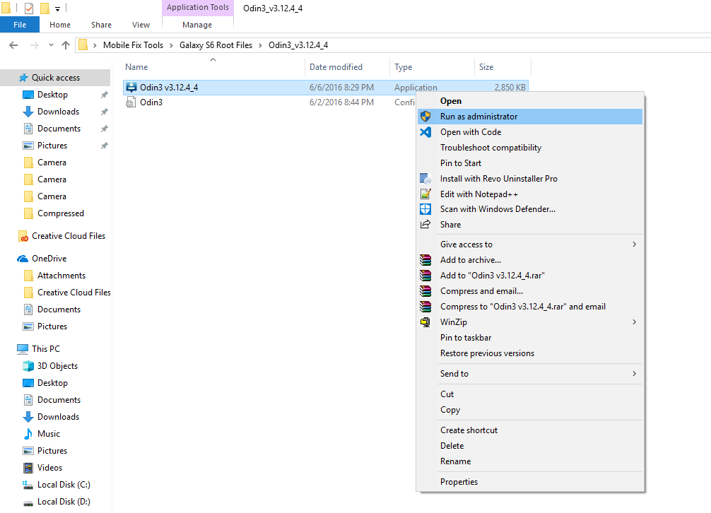

How to Flash TWRP

Disclaimer : This is just for educational purposes. Do not misuse.
Custom Recovery
The menu from which the android is booted is known as Custom Recovery. A Custom Recovery allows you to install a separate operating system (Custom ROM), backup your Android data, delete your Android data, restore Android data and many more.
Requirements to Flash TWRP
1. Download TWRP.
2. Download Odin.
3. Make sure that your PC/Laptop is charged at least 40%.
Method To Flash TWRP
1. Enable USB Debugging on your device. For this purpose, go to Settings > Developer Options and enable USB Debugging. If Developer Options isn't visible then go to Settings > About and tap the Build number seven times. This will enable Developer Options from where you can enable USB Debugging.

2. Reboot your phone into Download Mode by pressing Home, Power and Volume down key at the same time and hold them.

3. Hold the keys until a warning screen appears and then press the volume up button to continue.

3. Connect your device to your Computer/Laptop.
4. Now, Open Odin as Admin by right-clicking it.

5. Now, Click on AP/PDA and select the tar file that you have downloaded.

6. Wait for approximately 2 mins until it gets loaded. Keep an eye on the log (at the left side) so that you will come to know when it's loaded.

7. Now, click on the Start button and wait until all the process gets done and then PASS comes written on the screen.

8. Congratulations, you have successfuly installed TWRP Recovery on your Android. Now, your mobile will automatically restart.